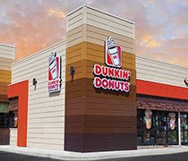

Cumplimos en México 25 años,
y lo celebramos con una promoción
en todas nuestras donas al 2X1
y sigue siendo una opción popular para aquellos
que buscan disfrutar de donas y café de alta calidad.
Puedes crear una torre
de donas en lugar de
un pastel tradicional
y festejar a lo grande. Fiestas infantiles
Los niños adoran
las donas, y puedes
ofrecer una variedad
de sabores. Fiestas familiares
Las donas son
un excelente postre
para compartir en
reuniones familiares. Baby Showers
Las donas decoradas
pueden ser una opción
atractiva para celebrar
la llegada de un bebé. Días festivos
Las donas decoradas
con motivos navideños
o de Halloween son
siempre un éxito.
Los Orígenes Dunkin'
En 1948, William Rosenberg y Stephen So abrieron su primer restaurante, llamado Open Kettle, en Quincy, Massachusetts, al cual posteriormente re-nombraron como Dunkin' Donuts en 1950.
En 1990 fue adquirida por Allied Lyons, que poco antes había comprado a su competidora Mister Donut. En 2004, la sede de la empresa se trasladó a Cantón. En 2010, las ventas de todo
el sistema mundial de Dunkin' Donuts fueron de seis mil millones de dólares.
Dunkin' Donuts, junto con Baskin Robbins, es copropiedad de Dunkin' Brands, Inc. Dunkin' Brands también era propietario de la franquicia Togo, pero la vendió a finales
de 2007 a una empresa de capital privado.
En 2005 Allied Domecq pasó a ser propiedad de la empresa de bebidas Pernod Ricard, que se vendieron a un consorcio de tres firmas de capital privado. En 2018 se anuncia el cambio de nombre a Dunkin', eliminando la palabra «donuts» de su nombre.
Dunkin' evoluciona
Inicialmente, el logotipo tenía
un diseño diferente al actual.
El color marrón rojizo intenso
y la caligrafía reflejaban la
época y el ambiente
de cafetería del Dunkin' Donuts
original, antes de que
abandonara los vasos
de cerámica y la experiencia
de comer en el local.
Uno de los dos colores ahora famosos del logotipo de Dunkin Donuts debutó en la década de 1960. Este color, llamado "Powdered Candy", aún se puede encontrar en el logotipo actual. Con la taza de café y el nombre circular de la marca en la parte superior, el logotipo representaba los dos productos por los que eran más famosos: las donas y el café.
En 1976 se solicitó un nuevo rediseño completo del logotipo de Dunkin Donuts, pero este se mantendría, en cierta medida, hasta la fecha. Con la introducción de la famosa paleta de colores naranja y rosa, y las letras regordetas, se concibió el ahora icónico logotipo. Los colores de la marca tienen tonos dulces, ¡y la tipografía casi parece hecha de donas!
Este logotipo de Dunkin' Donuts presentaba la misma tipografía y paleta de colores, pero con el emblema de la taza de café. Esto impulsó el sector cafetero de su negocio, y el nuevo eslogan de Dunkin' Donut, "America Runs on Dunkin", les permitió expandirse aún más en el mercado del café. El vapor indica que su café siempre se sirve caliente.
Este pequeño rediseño del logotipo resaltó la taza de café en marrón para aclarar que, de hecho, era café y pulió el emblema con una combinación 50/50 de naranja y rosa. Aquí también fue donde se introdujo por primera vez el logotipo DD. El logotipo "DD", alternativo y más pequeño, se puede encontrar en muchas de sus sucursales, así como en artículos específicos, como su tarjeta negra.
Esta última versión representa
otra diferencia con respecto
a la versión anterior. Si bien
conserva la misma tipografía
y paleta de colores,
la eliminación del emblema
de la taza de café y la palabra
"donuts" del logotipo (así como
del nombre oficial) permite
una interpretación más amplia
y permite a Dunkin' explorar
otras vías para el desarrollo
de su marca.
¡Menos es siempre más!
¡Así las hacemos!
Harina de trigo
Es la base de
la masa.
Azúcar
Para darle dulzura
a la masa.
Levadura
Para ayudar
a que la masa suba
y sea esponjosa.
Mantequilla
Para darle suavidad
y sabor a la masa.
Huevo
Para enriquecer
la masa y darle estructura.
Vainilla
Para añadir
un toque de sabor.
Leche
Para hidratar
la masa y darle
una textura suave.
Chocolate
Glaseado
Granillo
Mermelada
Conoce nuestros deliciosos sabores
Chocolate con granillo
Menta con granillo
Lavanda con granillo
Glaceada con dulce
de leche
Fresa con frutas
Chocolate y azúcar
Relleno pastelero
Zanahoria glaceada
Rellena de chocolate
Azúcar y canela
Dona Unicornio
Dulce de leche
con nueces
Glaceada con dulce
de leche
Chocolate con nueces
Chococanela

Tu opinión es importante para nosotros. Si deseas contactar
a un representante de Atención al Cliente de Dunkin' sobre
una visita reciente a un restaurante o si tienes alguna opinión sobre los productos de nuestro menú, envíanos un correo electrónico o llámanos.
Gracias por tu interés en contactar
con Dunkin', te compartimos nuestras redes sociales, correo electrónico y teléfono con WhatsApp.